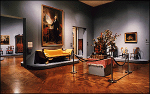

|
Decorative Arts | |
|
(c) | |
|
The decorative arts collection includes American and
European furniture, ceramics, and glass from the 16th
through the 20th centuries. The Institute also has one of
the best silver collections in the country, including a tea
service made by Paul Revere. Decorative arts are included in
many permanent galleries. |